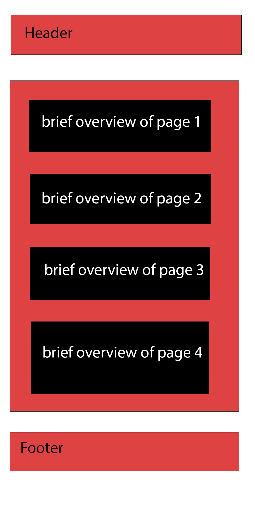

F1 Jargon
This name represents a website that is focused on explain F1 related terms, whether they are related to race rules or car technicalities.
The site acts as a guide for newer fans, by explaining race rules and car functions. I am also planning on making a page for major history and one that will update current race schedules and results using API.
How are F1 points awarded?
What is a pit stop and why is it important?
Red and black maybe
Bebas Neue for headings and titles.
Roboto for explanation paragraphs or lines.
Since it's a very basic design I think this single wireframe will be sufficient to represent both pc and mobile version.
